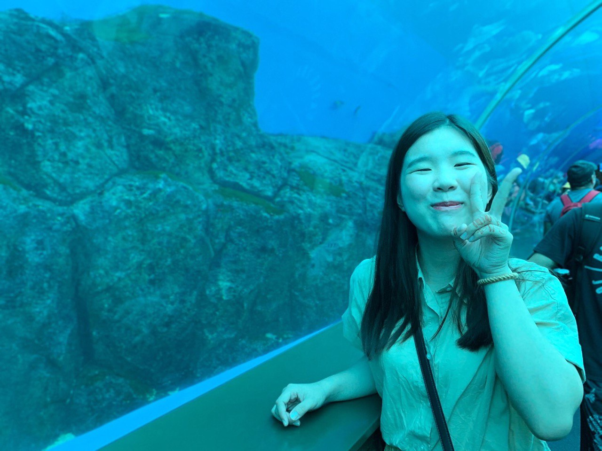

兩百字內個人簡介
您好，我叫蘇于婷。我之前是臨床護理師，因疫情期間體會到人生多重面向，故決定跳脫護理領域，追求一直感興趣的資訊科技。疫情使線上學習資源豐富，便開始自學寫程式。過程中，每解決問題或掌握新知識時，我感受到學習帶來的成就感和開心。後來進入東華的資工所就讀，目前已碩士二年級，預計六月底口試。希望透過bootcamp來實踐及加深理解，進一步學習技能，以便順利找到一份工作，也希望未來將過往經驗與新學的技術結合，貢獻於社會。
為了成為軟體工程師，做過什麼努力？若有具體作品請分享給我們。
為了想要成為軟體工程師，除了一開始我先透過網路上的資源，例如:Udemy、YouTube等等方式先學習Python，並且我先選擇就讀資訊工程研究所，想說獲取學歷可以拿到面試的敲門磚，並且在碩士一年級下學期獲得書卷獎，目前歷年排名是1/42，就學期間努力獲得好成績也是希望說可以獲取工作資格。因為就學期間目前學習的東西都跟機器學習、深度學習等等較相關，但我知道我未來要當後端工程師，並且目前市場上可能還在凍結中，所以希望透過此bootcamp的訓練過程，可以讓我更順利得到工作。
關於具體作品的部分:

如果參與這個訓練，會怎麼安排學習時間？
關於在時間安排上，因為就讀日間部且現在寫論文中，所以我有整天的時間可以安排學習。關於時間上的安排，我覺得我有信心，因為我有具體目的性，因為我希望我6月底口試完後，可以專心弄好我的實作並且面試到工作，然後直接從學校這邊搬家到公司附近。
是否有想要加入的公司？為什麼想加入該公司？
如果是想加入的公司，因為我以前就讀護理系並成為臨床護理師一段時間，所以我希望如果可以的話，加入跟醫療有相關的公司或者是team。例如:廣達的BU12、DeepQ、智齡科技等等的公司，希望如果有機會的話，可以讓自己以前學的東西跟現在的工作進行結合。
請描述一件產生明顯負面情緒的經歷，如何處理該情緒？
剛踏入醫院工作的我，面對了一個緊缺人手的臨床環境。忙碌的臨床環境導致學姊們希望新人能迅速成長，最好凡事指導一次後，新人就可以學會。在這種期望下，導致我剛開始時有不小的適應壓力。我不斷催促自己，希望能迅速熟悉工作流程，不給醫療團隊帶來額外負擔。然而，臨床工作的複雜程度遠超我所預期，有時是制度流程上的問題，有時則是溝通技巧上的挑戰。
隨著時間推移，我逐漸發現自己陷入了自我批評的循環中，給自己帶來了巨大的壓力，甚至導致了失眠，進而影響了第二天的工作效率。後來我察覺到不行再這樣下去，於是我開始接受自己的不完美。因為我意識到，無論是誰，都無法達到完美，錯誤在所難免。於是我開始向關係較好的學姐尋求建議，了解她們是如何逐步適應這一環境的，同時也閱讀了關於心靈成長的書籍，逐漸找到了適合自己的節奏。
之後工作表現改善，不僅得到了學姊的認可和鼓勵，甚至獲得了家屬的讚賞。我從這段經歷中學到了，面對負面情緒時，以第三者的角度客觀分析自己的處境是非常重要的。並在明確問題後，找到解決方案並勇於求助，可以讓我們從他人的經驗中學習，找到克服困難的方法。
關於這份申請網頁，分享一個開發時的技術心得。
一開始在做這份網頁的時候，我沒有什麼排版上的想法，所以為了尋找靈感，我有搜尋一下Github上面關於portfolio以及小紅書和Google查詢看看，然後在我大致上確認想要的排版後，開始撰寫程式，並在不太會的時候查詢了W3School、iT邦幫忙等等的網站，然後慢慢把網頁做起來，而且我還找到了一個可以看顏色漸色效果的網站，來搭配我覺得好看的顏色，另外Flex排版也是一件蠻有趣的事情，重點還會了解了子父層之間的關係性，所以有做到我想要的效果，我覺得還蠻開心的!
請用簡短兩三句話，描述對你而言，最重要的一項人際交往原則。
我覺得與人交往最重要的是真誠，以自己真實的樣貌與人相處，發自內心的關懷他人，並同理對方的感受、換位思考，這樣才會找到志同道合的夥伴。
其他想要對我們說的事情？
不好意思，我想要提一個小小的建議~截止日到3/17，如果可以加個時間的話，可能會更好一些。因為會不知道是到3/17的0:00還是3/17的23:59。多加上時間的話，可以讓想要申請者知道可奮鬥到最後的時間是什麼時候，小小建議一下，非常感謝你們!!